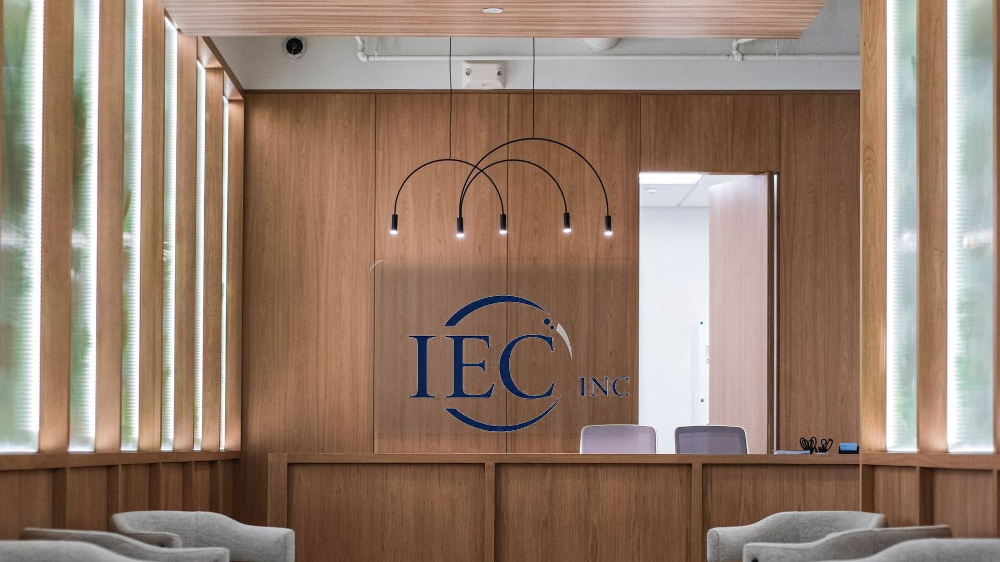

IEC es una empresa de desarrollo de negocios y consultoría estratégica con sede en Boston — construida sobre más de dos décadas de experiencia en salud y negocios internacionales — que trabaja en los sectores de salud, tecnología, bienes raíces y mercados internacionales.
IEC ayuda a los clientes a pasar de una idea ambiciosa a un camino organizado y creíble hacia adelante. Definimos la oportunidad, alineamos a las partes interesadas, desarrollamos relaciones y coordinamos la ejecución.
Nuestro modelo multisectorial es intencional. Muchas oportunidades significativas se encuentran entre industrias — salud y bienes raíces, innovación e instituciones, mercados internacionales y ejecución local. IEC trabaja en esas intersecciones.


International Empire Consultants, Inc. fue fundada por el Dr. Mohammed M. Morgan para aportar un enfoque de desarrollo de negocios multisectorial y basado en relaciones — uno moldeado por más de dos décadas en salud y negocios internacionales.
El modelo es deliberadamente conectivo. Las oportunidades significativas rara vez se encuentran dentro de una sola industria: un grupo médico necesita bienes raíces y tecnología; un inversionista internacional necesita experiencia local en salud; una empresa de tecnología necesita relaciones institucionales. IEC fue construida para trabajar en esas intersecciones, coordinando estrategia, personas y ejecución hasta que la oportunidad se vuelve real.
Hoy la firma lidera con la salud — crecimiento, alianzas y apoyo de gestión no clínica para organizaciones médicas y dentales — mientras continúa atendiendo a clientes en tecnología, bienes raíces y comercio internacional.
IEC combina el desarrollo de relaciones con la preparación y el seguimiento necesarios para convertir una conversación prometedora en una oportunidad viable.
Defina el objetivo, los responsables de la toma de decisiones y el próximo paso práctico.
Represente las oportunidades con precisión y proteja la confianza en cada relación.
Mantenga alineadas a múltiples partes, flujos de información y responsabilidades.
Gestione las discusiones comerciales confidenciales con cuidado profesional.
Respete el contexto local mientras conecta mercados e instituciones.
Mantenga el impulso después de las presentaciones y las primeras reuniones.
IEC trabaja con organizaciones y directivos que necesitan un coordinador estratégico de confianza entre industrias, instituciones o fronteras.
Prácticas médicas y dentales, MSO, grupos de proveedores e innovadores de la salud que planifican una expansión o una escala operativa.
Directivos calificados que evalúan oportunidades en bienes raíces, hotelería, salud y comercio especializado.
Equipos que preparan soluciones emergentes para la adopción institucional, pilotos, alianzas o comercialización internacional.
Organizaciones que buscan contexto del mercado de EE. UU., relaciones creíbles y estrategias coordinadas de entrada o distribución.
Desarrollo de negocios internacionales y alianzas estratégicas

El Dr. Morgan lidera las iniciativas de crecimiento en salud, desarrollo de negocios internacionales y alianzas estratégicas de IEC. Su trabajo combina comprensión clínica, estrategia comercial y una red internacional basada en relaciones.
Obtuvo su M.B.Ch.B. en la University of Alexandria, completó una beca posdoctoral en cardiología en Massachusetts General Hospital / Harvard Medical School, y se desempeñó como investigador en endocrinología en Massachusetts General Hospital. Su carrera operativa abarca más de 20 años en prestación de servicios de salud, desarrollo de negocios médicos y emprendimientos internacionales. Trabaja en inglés y árabe.
Desde Boston, trabaja con líderes de la salud, innovadores, operadores, inversionistas y socios internacionales para ayudar a que las oportunidades prometedoras lleguen a la audiencia adecuada y avancen hacia la ejecución.